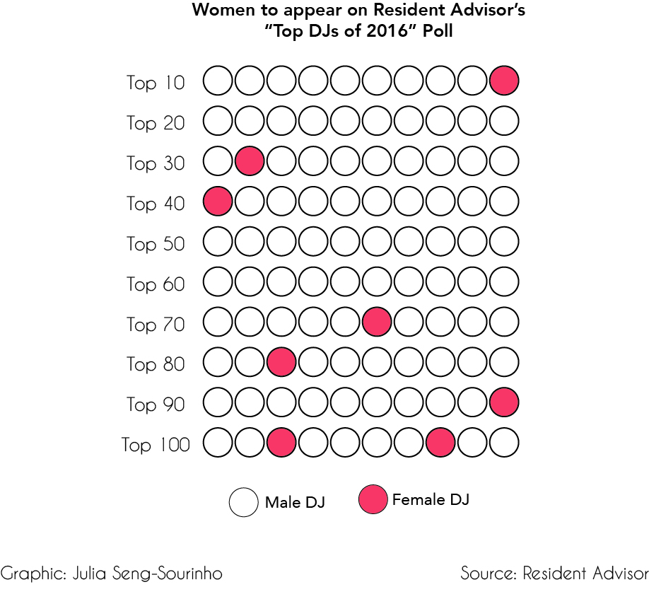
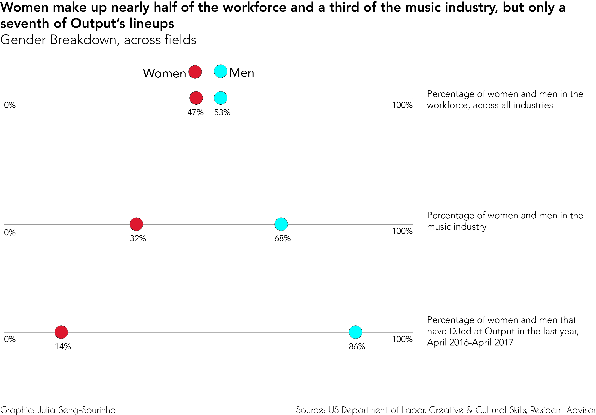

by JULIA SENG-SOURINHO
DEC 13, 2017
Since its 2013 opening, Output has solidified itself as New York City’s leading electronic-music club. The Williamsburg club boasts lineups of world-renowned DJs night after night (from Wednesday through Sunday, at least — the club is only open then). In the last week of April 2017 alone, Francois K, Bonobo, Mark Knight, and Oscar G all performed one night after the other. Enumerating these names heightens one’s admiration for Output and their commitment to providing their audience with good music, but it also pokes at an issue: where are the women? The list of performers, although incredible, is indisputably male.
"Resident Advisor, the most popular portal for electronic music-related events and news, listed only 8 women in their “Top 100 DJs of 2016” list."
It is a notorious fact that there aren’t very many women in the electronic music industry. From the producers to the performers to the audience, this world is particularly male. However, a select group of women — The Black Madonna, Nina Kraviz, Maya Jane Coles, etc. — has made incredible strides in the industry and reached huge levels of success; many of them headline at the same, big electro music festivals as their male counterparts. Although their successes are admirable, they are rare. Resident Advisor, the most popular portal for electronic music-related events and news, listed only 8 women in their “Top 100 DJs of 2016” list, with the highest-ranking woman, The Black Madonna, coming in 10th place.
The reason behind such stark underrepresentation is difficult to pin-point. Electronic music is an obscure genre that prides itself on being so — there is barely any data, even approximate, on how many female/male DJs there are, their pay, or otherwise. One of the few things we can say with certainty is that audiences are seven times more likely to see a man rather than a woman behind the DJ booth at Output. Of the 214 events Output held in its main room from April 1st, 2016 to April 31st, 2017, only 30 featured women; of those 30, only 6 were headlined by a woman, with the same woman — Maya Jane Coles — headlining 3 times. Gender inequality in the music industry has been extensively reported, but these numbers for electro-music specifically indicate an even wider gender gap.
Taylor Shockley, an Output manager and DJ, attributes the discrepancy to the lack of women interested in becoming DJs with the intent of booking shows: “I don’t believe there is a male force that is holding women back from becoming competitive when it comes to this.” In fact, Shockley makes the argument that although there are fewer women DJs, those that do play are advantaged, rather than disadvantaged, because of their gender: “Most girls that DJ at all are booked more than guys because people want to balance out the culture — sure, there are more guys DJing, but because of this there are so many that don’t get booked.”
"Women DJs have always been around, and the reason people may not know it is because statistics on the percentage of people who are excluded don’t, and never will, exist."
Tara Shanahan, an aspiring DJ and daughter of the owner of Chicago’s most famous electronic-music club, Smartbar, has experiences that prove otherwise. Shanahan recalls her first time DJing at the age of sixteen: after finishing her set, Shanahan was approached by a woman who, although first complimented her music, then undercut it by implying it “didn’t matter,” since she is a woman. The assumption was that female DJs simply can’t make it in the business because there is no demand. The Black Madonna, also the Talent Buyer at Smartbar, allegedly said: “Yep — that’s it. Welcome,” after Tara later recounted this episode. Tara’s experience is revelatory of the biases that both men and women hold in regards to female DJs and The Black Madonna’s reaction is indicative of how often a woman hears them.
"Female DJs aren’t 'in' again, they’ve been here the whole time."
Shanahan lists visibility, rather than a mere lack of women DJs, as the main reason for Output’s, or any club’s, failure to include an equal number of men and women in their line-ups. Women DJs have always been around, and the reason people may not know it is because statistics on the percentage of people who are excluded don’t, and never will, exist. After mentioning the fact that a salesman at Halcyon, the electronic-music vinyl shop attached to Output, said he noticed a surge in customers asking for female records, Tara looks more frustrated than glad: “It turns into a fad.” Tara likens the situation to the one Amy Schumer has described for female comics: “When she’s on the cover of magazines the thing will be like ‘Female comics are making it in,’ and she’ll say, ‘We’ve been here for, like, 20 years.’” It’s the same for DJs. Female DJs aren’t “in” again, they’ve been here the whole time.
The problem, then, is ensuring more women get the recognition they deserve in a field they’ve always been a part of.